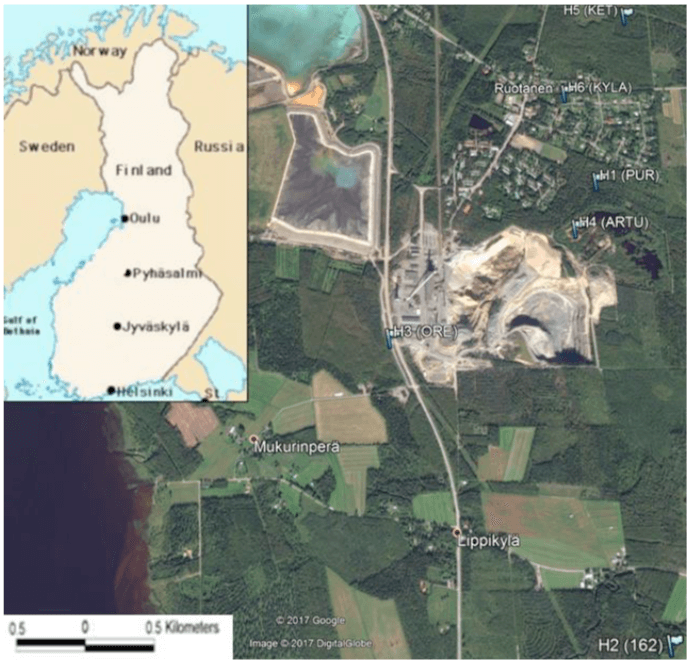
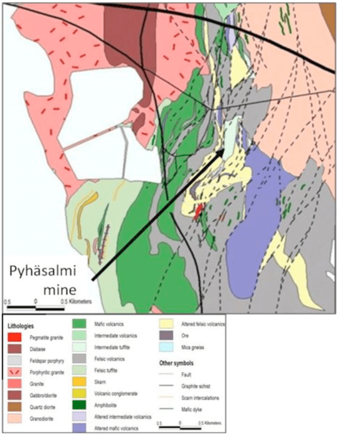
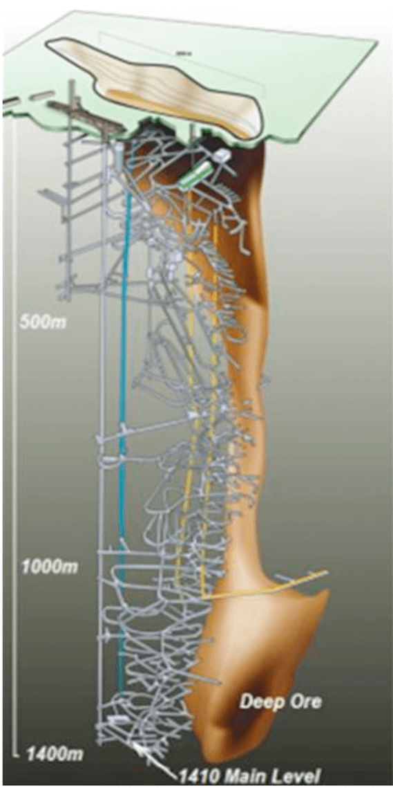
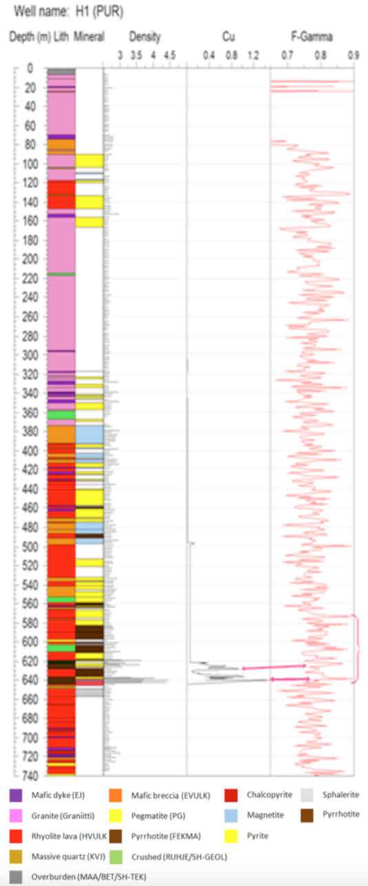
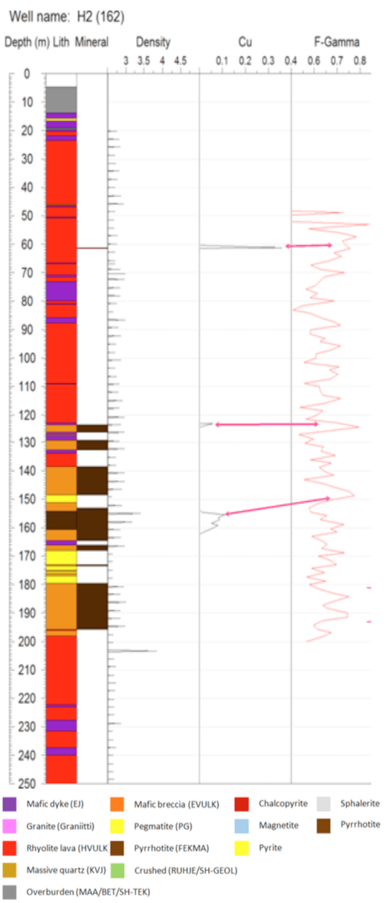

Copper and Zinc Sulphide Targeting using Adrok’s Atomic Dielectric Resonance (ADR)
Project aims
First Quantum Minerals required a technique to identify Sulphide (Copper/Zinc) within a well constrained geological setting in hopes of identifying locations to extend the life of their Pyhasälmi mining operations. Specifically this would involve Adrok identifying the volcanogenic metal sulphide deposits remaining within an ore body surrounded by typically granitic host body.
Exploration/Project challenges
Angled drilling is often used to avoid historical mine workings that exist in the structure. The location of residential housing on the surface also reduces the available locations for drill sites and the use of traditional geophysics techniques. The majority of the economic reserves for this deposit have since been mined, and production is expected to cease in 2019. First Quantum is looking to make new economic discoveries in the area and extend the life of the mine (Figure 1).
Geological context
 Figure 1: Location map of the field survey area.  Figure 2: Geological map of the Pyhasälmi mine and surrounding area.  Figure 3: 3D model of the Pyhäsalmi mine and emplaced ore body and the mine workings surrounding the deposit.Formed in a submarine syn-volcanic hydrothermal system, Pyhäsalmi mine contains a metal sulphide ore body (Figure 3) that accumulated from sulphide minerals precipitating out onto and below the sea floor.
The regime at Pyhäsalmi is typical of volcanogenic massive sulphide ore deposits (VMS deposits) rich in Copper and Zinc. The surrounding igneous host rock is comprised of granites, rhyolitic lavas and mafic dykes/breccias (Figure 2). The primary lithological constituents of the ore body are over 90% sulphide minerals such as Pyrite (FeS), Pyrrhotite (Fe1−xS) and Magnetite (Fe3O4).
Copper & Zinc in the form of Chalcopyrite (CuFeS2) and Sphalerite ((ZnFe)S) mineralisation are present within this sulphide body in economic accumulations. Exhibiting Copper (1.85%), Zinc (1.55%), along with accumulations of Gold (0.46g/t) and Silver (14.6 g/t) which are present in smaller quantities1.
Adrok’s results
For the two holes processed within this case study, H1 (PUR) (Figure 4) & H2 (162) (Figure 5), both were able to be correlated against results from the training data. Specifically, Adrok’s F- Gamma log shows that peaks in this log are able to pick out areas of Copper and Pyrrohitite mineralisation.
Within H1 (PUR) it is noted that there are other locations with high F-Gamma hits, however the maximum peak occurred at the main Chalcopyrite mineralisation, giving weight to the interpretation.
In addition to this, the downhole data provided by the client are from angled holes and deviate from Adrok’s V-bore increasingly with depth, up to 600m in H1 (PUR) (Figure 6).
 Figure 4: Client lithological column, mineralisation column, density log and Copper recovery, corrected to 90°, alongside Adrok’s F-Gamma log for H1 (PUR).  Figure 5: Client lithological column, mineralisation column, density log and Copper recovery, corrected to 90°, alongside Adrok’s F-Gamma log for H2 (162).Benefits for client
Adrok provided the client with fast data collection and data processing, where multiple sites were scanned every day during the field survey and the subsequent data processing occurred within one month. Good target acquisition and constraining depth estimates, where ADR results correlated well with the client provided training data. The ADR scanners portability meant that the survey could be undertaken in residential locations where it would be impossible to conduct drilling operations.